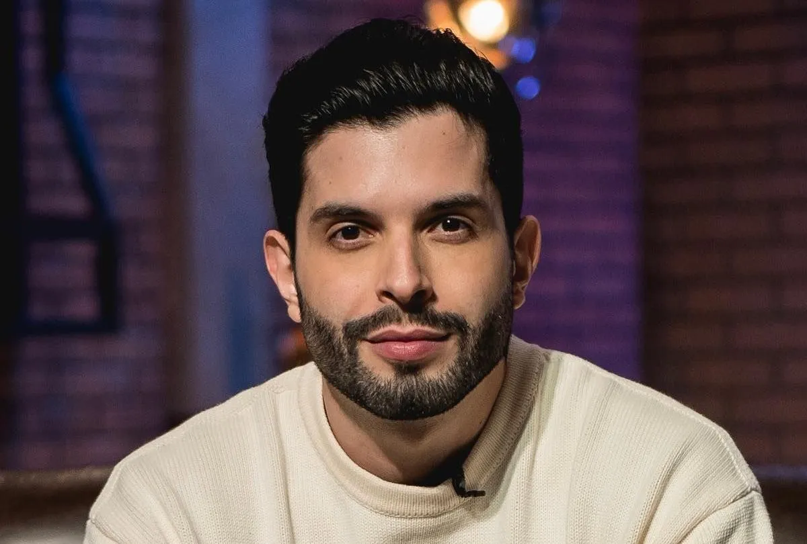

Jogos em que a LOUD participa
Free Fire

Fortnite

Valorant

A LOUD foi criada em 28 de fevereiro de 2019 pelo youtuber Bruno "PlayHard" Oliveira junto com os empresários Jean Ortega e Mathew Ho. Desde o início, a LOUD se concentrou em criar vídeos no YouTube e popularizar seus jogadores e influenciadores. Sendo uma das pioneiras desse modelo no Brasil, a LOUD se tornou a primeira organização brasileira de esportes eletrônicos a atingir 1 bilhão de visualizações. A LOUD começou com uma equipe de Free Fire, chegando a competir na Liga Brasileira de Free Fire (LBFF). Em 2020, a Riot Games anunciou a LOUD como uma das equipes selecionadas para participar do Campeonato Brasileiro de League of Legends (CBLOL) a partir da temporada 2021. Em 2021, a LOUD foi a equipe que mais ganhou seguidores no Twitter e se tornou a mais seguida no Instagram. Em agosto de 2022, a organização se tornou a quarta mais assistida do mundo na Twitch. No ano de 2022, a LOUD anunciou uma equipe de Valorant com um elenco já montado pelos jogadores Gustavo "Sacy" Rossi e Matias "Saadhak" Delipetro. No dia 28 de outubro de 2022, a LOUD anunciou o influenciador digital Iran Ferreira, mais conhecido como Luva de Pedreiro, como embaixador. Antes de ingressar na LOUD, Iran já era conhecido popularmente em todo o mundo, principalmente no cenário do futebol, onde já recebia atenção de jogadores como Neymar e Cristiano Ronaldo. No final de 2023, a LOUD anuncia a integração do atleta de futebol, Vinícius Júnior, como o novo embaixador da organização e também como parte da diretoria. O anúncio foi feito através do Twitter do mesmo, e também pelo Twitter da Loud.
Free Fire
Fortnite
Valorant